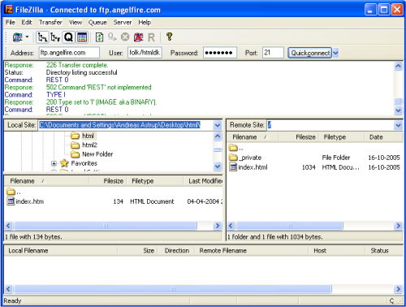

Lição 13: Uploading páginas
Até agora somente você conseguiu visualizar suas páginas. Chegou a hora de mostrá-las para o mundo todo.
O mundo está preparado para ver suas páginas?
O mundo está preparado sim - você, em breve, estará também. Para publicar seu trabalho na Internet, você precisa somente de espaço em um servidor e um programa FTP gratuito.
Se você costuma acessar a Internet já deve ter visto que existem vários serviços gratutitos de hospedagem de sites. Seu endereço no servidor será alguma coisa parecida com http://home.servidor.com/~nomedousuario. Você tem que ativar o serviço. Informe-se como fazer isto na documentação fornecida pelo serviço de hospedagem.
Outra opção é obter um espaço gratuito de um servidor na Internet. Isto é igual a registrar uma conta de e-mail (como por exemplo, obter um endereço de e-mail do hotmail) você pode registrar-se gratuitamente para obter um espaço em um servidor na Internet. Existem várias companhias que oferecem este serviço gratuito - entre elas a Angelfire (clique em "Sign Up" e escolha membro gratuito - ou faça uma busca no Google para encontrar um serviço gratuito com registro em português) - isto é um processo bem rápido.
Para acessar o servidor você precisa conhecer o "Nome do seu servidor" (Por exemplo, ftp.angelfire.com) e ter um nome de usuário e senha.
Isto é tudo que eu preciso?
Para acessar o servidor e publicar as páginas você precisa de um programa FTP. Você não deve ter um programa destes ainda, mas existem vários deles na Internet para download e são gratuitos.
Existem muitos programas FTP. Um dos melhores é o FileZilla, e é gratuito . Você pode obter o FileZilla em filezilla.sourceforge.net.
Como eu faço o upload das páginas?
Abaixo fornecemos um exemplo de como fazer isto usando o servidor Angelfire e o programa FileZilla. Este procedimento é mais ou menos igual para qualquer programa FTP.
Conecte-se à Internet e abra o programa FTP. Insira "Host Name" ("ftp.angelfire.com" no "Address"), nome do usuário (em "User") e senha (em "Password") clique "Connect". Você agora tem acesso ao servidor. Em um lado da janela do programa você verá os diretórios e arquivos do seu computador ("Local Site"), e no outro o do servidor ("Remote Site"):
Ache os seus documentos HTML e imagens a serem publicadas (no "Local site") e transfira para o servidor ("Remote site") simplesmente dando um clique duplo nos arquivos. Agora o mundo todo poderá ver seu site! (Por exemplo, no endereço http://www.angelfire.com/folk/htmlnet/pagina1.htm).
Dê a uma das páginas o nome de "index.htm" (ou "index.html") e ela será automaticamente a página de entrada no site, ou seja, basta digitar http://www.angelfire.com/folk/htmlnet (sem qualquer nome de arquivo) e abrirá http://www.angelfire.com/folk/htmlnet/index.htm.
Para mais adiante será uma boa idéia comprar um domínio (espaço no servidor) só para você (www.seu-nome.com) e assim ter um nome do site bem mais curto e fácil de guardar que aqueles fornecidos por um serviço gratuito da Internet. Você pode encontrar na Internet várias firmas que vendem domínio. Faça uma busca do Google.